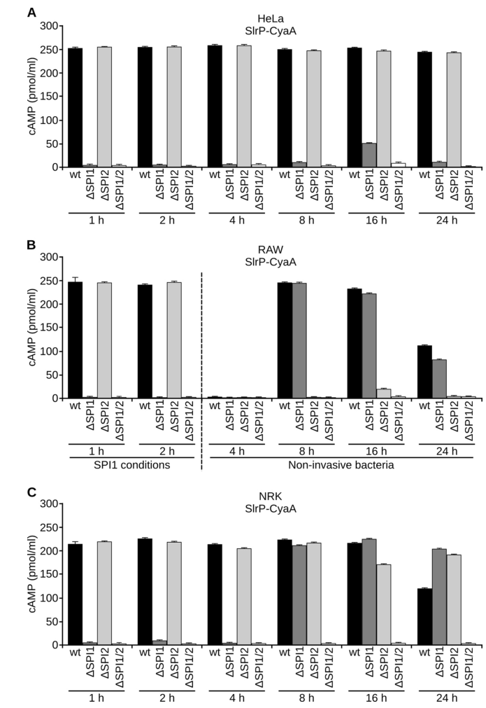

SlrP (Salmonella leucine-rich repeat protein) is a type III secretion system (T3SS) effector protein in Salmonella enterica serovar Typhimurium. It belongs to the LRR-containing bacterial E3 ubiquitin ligase family (IpaH-like) and contains an N-terminal leucine-rich repeat domain that mediates target recognition and a C-terminal NEL (novel E3 ligase) domain with E3 ubiquitin ligase catalytic activity (Cys-546 is the catalytic residue). SlrP is secreted via both SPI-1 and SPI-2 T3SS into host cells, where it ubiquitinates host thioredoxin (TXN) in the cytosol, leading to decreased TXN activity and increased host cell death (PMID:19690162). It also targets the ER lumenal chaperone ERdj3 (DNAJB11), interfering with ERdj3's binding to denatured substrates (PMID:20335166). SlrP is a virulence factor, not a chaperone.
| GO Term | Evidence | Action | Reason |
|---|---|---|---|
|
GO:0004842
ubiquitin-protein transferase activity
|
IEA
GO_REF:0000120 |
ACCEPT |
Summary: Combined IEA annotation for ubiquitin-protein transferase activity based on ARBA and InterPro (NEL domain). SlrP has E3 ubiquitin ligase activity demonstrated experimentally (PMID:19690162).
Reason: Correct. SlrP is an E3 ubiquitin ligase demonstrated to ubiquitinate both ubiquitin and host thioredoxin (PMID:19690162). Consistent with IDA evidence.
|
|
GO:0005576
extracellular region
|
IEA
GO_REF:0000044 |
MARK AS OVER ANNOTATED |
Summary: IEA annotation for extracellular region from UniProt subcellular location mapping. SlrP is a T3SS effector translocated into host cells, but the secretion route alone does not establish extracellular-region localization as a biologically meaningful site of function.
Reason: UniProt "Secreted" keyword mapping is imprecise for a T3SS effector that is directly delivered into host cells. The supported functional locations are host cell cytoplasm and host cell endoplasmic reticulum, where SlrP targets thioredoxin and ERdj3.
|
|
GO:0016567
protein ubiquitination
|
IEA
GO_REF:0000120 |
ACCEPT |
Summary: Combined IEA annotation for protein ubiquitination based on ARBA and InterPro (NEL domain). SlrP ubiquitinates host thioredoxin (PMID:19690162).
Reason: Correct. SlrP mediates ubiquitination of host thioredoxin and ubiquitin itself in vitro (PMID:19690162). Consistent with IDA evidence.
|
|
GO:0016740
transferase activity
|
IEA
GO_REF:0000043 |
ACCEPT |
Summary: IEA annotation for transferase activity from UniProt keyword mapping. This is a broad parent of ubiquitin-protein transferase activity.
Reason: Correct but very broad. The more specific terms GO:0004842 and GO:0061630 are also annotated. Acceptable as a broad IEA.
|
|
GO:0030430
host cell cytoplasm
|
IEA
GO_REF:0000044 |
ACCEPT |
Summary: IEA annotation for host cell cytoplasm from UniProt subcellular location mapping. SlrP is translocated into the host cell cytoplasm via T3SS (PMID:20335166).
Reason: Correct. SlrP is delivered into the host cell cytoplasm where it targets thioredoxin for ubiquitination. Consistent with IDA evidence (PMID:20335166).
|
|
GO:0061630
ubiquitin protein ligase activity
|
IEA
GO_REF:0000003 |
ACCEPT |
Summary: IEA annotation for ubiquitin protein ligase activity from EC mapping (EC 2.3.2.27). SlrP is annotated as E3 ubiquitin-protein ligase in UniProt with EC 2.3.2.27.
Reason: Correct and more specific than GO:0004842 for describing the E3 ligase function. SlrP functions as an E3 ubiquitin ligase (PMID:19690162).
|
|
GO:0005515
protein binding
|
IPI
PMID:20335166 The Salmonella type III secretion effector, salmonella leuci... |
MARK AS OVER ANNOTATED |
Summary: IPI annotation for protein binding showing interaction with ERdj3 (DNAJB11, Q9UBS4). SlrP binds ERdj3 via its leucine-rich repeat domain and interferes with ERdj3's chaperone function (PMID:20335166).
Reason: Protein binding (GO:0005515) is uninformative. The interaction with ERdj3 is real but the generic term does not convey the functional significance. The interaction is part of SlrP's virulence mechanism targeting the host ER chaperone ERdj3 for functional disruption.
|
|
GO:0044165
host cell endoplasmic reticulum
|
IDA
PMID:20335166 The Salmonella type III secretion effector, salmonella leuci... |
ACCEPT |
Summary: IDA annotation for host cell ER localization. Confocal microscopy and subcellular fractionation showed that SlrP is partially located in the ER of transfected HeLa cells (PMID:20335166).
Reason: Direct experimental evidence from confocal microscopy and subcellular fractionation (PMID:20335166). SlrP localizes to the host ER where it targets ERdj3.
Supporting Evidence:
PMID:20335166
Confocal microscopy and subcellular fractionation demonstrated that, in transfected HeLa cells, SlrP was partially located in the endoplasmic reticulum.
|
|
GO:0051082
unfolded protein binding
|
IPI
PMID:20335166 The Salmonella type III secretion effector, salmonella leuci... |
REMOVE |
Summary: IPI annotation for unfolded protein binding based on interaction with ERdj3 (Q9UBS4). However, SlrP does not bind unfolded proteins itself. Rather, SlrP binds the chaperone ERdj3 and interferes with ERdj3's ability to bind denatured substrates (PMID:20335166). The "unfolded protein binding" annotation appears to be a misannotation -- SlrP disrupts chaperone function, it does not itself bind unfolded proteins in a chaperone-like manner.
Reason: This annotation is incorrect. SlrP does not bind unfolded proteins. The paper (PMID:20335166) shows that SlrP binds ERdj3 (a chaperone) and interferes with ERdj3's binding to a denatured substrate. The IPI with/from column shows Q9UBS4 (ERdj3/DNAJB11), which is a folded chaperone protein, not an unfolded protein. The annotation confuses SlrP's interaction with a chaperone with binding to unfolded proteins. SlrP is a virulence factor/E3 ubiquitin ligase that targets specific host proteins (thioredoxin, ERdj3) for functional disruption, not a protein that binds unfolded substrates.
Supporting Evidence:
PMID:20335166
The presence of SlrP interfered with the binding of ERdj3 to a denatured substrate.
|
|
GO:0030430
host cell cytoplasm
|
IDA
PMID:20335166 The Salmonella type III secretion effector, salmonella leuci... |
ACCEPT |
Summary: IDA annotation for host cell cytoplasm from Bernal-Bayard et al. (2010). Consistent with IEA annotation and the known T3SS-mediated delivery of SlrP into host cells.
Reason: Correct. Direct experimental evidence for host cell cytoplasm localization. SlrP targets thioredoxin in the cytosol and ERdj3 in the ER (PMID:20335166).
|
|
GO:0032091
negative regulation of protein binding
|
IDA
PMID:20335166 The Salmonella type III secretion effector, salmonella leuci... |
ACCEPT |
Summary: IDA annotation for negative regulation of protein binding. SlrP interferes with ERdj3's ability to bind denatured substrates (PMID:20335166). This captures SlrP's virulence mechanism of disrupting host chaperone function.
Reason: This accurately describes the functional consequence of SlrP-ERdj3 interaction: SlrP negatively regulates ERdj3's protein binding (chaperone) activity. This is a documented virulence mechanism (PMID:20335166).
Supporting Evidence:
PMID:20335166
The presence of SlrP interfered with the binding of ERdj3 to a denatured substrate.
|
|
GO:0004842
ubiquitin-protein transferase activity
|
IDA
PMID:19690162 Salmonella type III secretion effector SlrP is an E3 ubiquit... |
ACCEPT |
Summary: IDA annotation for ubiquitin-protein transferase activity from Bernal-Bayard and Ramos-Morales (2009). SlrP mediates ubiquitination of ubiquitin and host thioredoxin in vitro. Cys-546 to Ala mutation abolishes this activity (PMID:19690162).
Reason: Core molecular function of SlrP. Directly demonstrated by in vitro ubiquitination assays with Cys-546 mutant as negative control (PMID:19690162).
Supporting Evidence:
PMID:19690162
In vitro, SlrP was able to mediate ubiquitination of ubiquitin and thioredoxin.
|
|
GO:0005515
protein binding
|
IPI
PMID:19690162 Salmonella type III secretion effector SlrP is an E3 ubiquit... |
MARK AS OVER ANNOTATED |
Summary: IPI annotation for protein binding showing interaction with host thioredoxin (TXN, P10599). SlrP binds thioredoxin as its ubiquitination substrate (PMID:19690162).
Reason: Protein binding (GO:0005515) is uninformative. The interaction with thioredoxin is real but the generic term does not capture the functional significance -- SlrP binds TXN as an E3 ubiquitin ligase substrate. The ubiquitin ligase activity annotations already capture this function more informatively.
|
|
GO:0016567
protein ubiquitination
|
IDA
PMID:19690162 Salmonella type III secretion effector SlrP is an E3 ubiquit... |
ACCEPT |
Summary: IDA annotation for protein ubiquitination from Bernal-Bayard and Ramos-Morales (2009). SlrP ubiquitinates host thioredoxin (PMID:19690162).
Reason: Core biological process of SlrP. Directly demonstrated by ubiquitination assays (PMID:19690162). Consistent with IEA annotation.
Supporting Evidence:
PMID:19690162
In vitro, SlrP was able to mediate ubiquitination of ubiquitin and thioredoxin.
|
|
GO:0030254
protein secretion by the type III secretion system
|
ISS
GO_REF:0000024 |
ACCEPT |
Summary: ISS annotation for T3SS-mediated secretion based on manual transfer from ortholog. SlrP is translocated via both SPI-1 and SPI-2 T3SS into host cells.
Reason: Correct. SlrP is a well-characterized T3SS effector secreted via both SPI-1 and SPI-2 systems. This is fundamental to its delivery mechanism.
|
The research report should be a detailed narrative explaining the function, biological processes, and localization of the gene product. Citations should be given for all claims.
You should prioritize authoritative reviews and primary scientific literature when conducting research. You can supplement
this with annotations you find in gene/protein databases, but these can be outdated or inaccurate.
We are specifically interested in the primary function of the gene - for enzymes, what reaction is catalyzed, and what is the substrate specificity? For transporters, what is the substrate? For structural proteins or adapters, what is the broader structural role? For signaling molecules, what is the role in the pathway.
We are interested in where in or outside the cell the gene product carries out its function.
We are also interested in the signaling or biochemical pathways in which the gene functions. We are less interested in broad pleiotropic effects, except where these elucidate the precise role.
Include evidence where possible. We are interested in both experimental evidence as well as inference from structure, evolution, or bioinformatic analysis. Precise studies should be prioritized over high-throughput, where available.
The literature retrieved is consistent with the UniProt target identity Q8ZQQ2: SlrP is a Salmonella enterica serovar Typhimurium type III–secreted effector and a leucine-rich repeat (LRR/LPX)–containing bacterial E3 ubiquitin ligase belonging to the NEL (novel E3 ligase) family, with an N-terminal LRR/LPX region and a C-terminal catalytic NEL domain. (pillay2023speakingthehost pages 8-11, bullonesbolanos2022snrpd2isa pages 16-17)
NEL-family effectors are bacterial E3 ligases delivered into host cells by type III secretion systems (T3SS). They use a HECT-like transthiolation mechanism: the effector receives ubiquitin from a host E2~Ub conjugate onto a catalytic cysteine (thioester intermediate) and then transfers ubiquitin to substrate lysines. This family architecture typically includes an N-terminal substrate-recognition/autoinhibitory region (LRR/LPX) and a C-terminal catalytic NEL domain; one synthesis source reports SlrP has a catalytic cysteine at C546 and a multi-LRR N-terminus. (e2024investigatingthefunctional pages 30-37, pillay2023speakingthehost pages 11-12)
Functionally, SlrP catalyzes ubiquitin transfer (E3 ubiquitin ligase activity; EC 2.3.2.27) from a host E2 enzyme to host protein substrates, producing ubiquitinated host proteins (often observed as polyubiquitin “ladders” in vitro). (bullonesbolanos2022snrpd2isa pages 8-11, pillay2023speakingthehost pages 8-11)
Recent work comparing Salmonella NELs (SlrP, SspH1, SspH2) shows the N-terminal (LRR-containing) region confers target specificity, demonstrated using chimeric proteins that swap N- and C-terminal regions and alter which targets are ubiquitinated. (bullonesbolanos2024specificitiesandredundancies pages 1-2, bullonesbolanos2024specificitiesandredundancies pages 10-12)
A key foundational study directly tested SlrP expression and translocation and concluded that SlrP can be translocated by both T3SS1 (SPI-1) and T3SS2 (SPI-2). Importantly, the system used depends on host cell type and infection timing: in RAW264.7 macrophages the authors report T3SS1 dependence early (1 h post-infection) and T3SS2 dependence later (6 h post-infection). (corderoalba2014patternsofexpression pages 1-2)
These timing and secretion-system dependencies are also visually supported by the cropped figure evidence from the same study (cAMP/CyaA′-based translocation assays across cell types and time points). (corderoalba2014patternsofexpression media e8f1f702)
A more recent comparative study likewise profiled NEL effector translocation using CyaA′ fusions in HeLa, RAW264.7, and NRK cells and collected readouts at 2, 4, and 8 h post-infection, finding that (under native promoter control) SlrP is detectable at both short and long times, and that translocation into RAW264.7 at 8 h is T3SS2-dependent (using SPI mutants). (bullonesbolanos2024specificitiesandredundancies pages 10-12)
Following translocation, SlrP localizes primarily in the host cytosol and partly at the endoplasmic reticulum (ER). (corderoalba2014patternsofexpression pages 1-2)
SlrP expression is optimal under intravacuolar-mimicking conditions that induce SPI-2 (e.g., low pH/low Mg2+). (corderoalba2014patternsofexpression pages 1-2)
A genetic search for regulators identified LeuO, Lon, and the PhoQ/PhoP two-component system as regulators of slrP. The same study concluded that PhoP directly activates slrP transcription under SPI-2–inducing conditions, while LeuO and Lon act via HilD under SPI-1–inducing conditions. (corderoalba2014patternsofexpression pages 1-2)
Cropped figure evidence from this work also supports the PhoP/PhoQ regulatory role and promoter architecture. (corderoalba2014patternsofexpression media 25d6ccc9, corderoalba2014patternsofexpression media 110b31be)
In a 2024 study focused on NEL-family effectors, transcription of slrP (and the other NELs) is likewise described as dependent on PhoP, and in vivo expression in macrophage infection required PhoP. (bullonesbolanos2024specificitiesandredundancies pages 1-2, bullonesbolanos2024specificitiesandredundancies pages 10-12)
Multiple sources describe SlrP as interacting with mammalian thioredoxin-1 (Trx1) and catalyzing its ubiquitination. This ubiquitination is reported to reduce thioredoxin activity and is linked to host cell death/cytotoxicity during infection. (bullonesbolanos2024specificitiesandredundancies pages 2-3, pillay2023speakingthehost pages 8-11)
A 2023 effector-focused review contextualizes thioredoxin’s roles in oxidative stress regulation and downstream transcription factor responses (including NF-κB and p53) while summarizing SlrP’s ability to ubiquitinate thioredoxin and its association with cytotoxic outcomes. (pillay2023speakingthehost pages 11-12)
SlrP binds the human ER chaperone ERdj3 and can interfere with ERdj3 folding activity, which is reported as another mechanism contributing to host cell death. (bullonesbolanos2024specificitiesandredundancies pages 1-2, worley2025salmonellatypeiii pages 11-12)
A 2022 primary study identified SNRPD2 (SmD2) as a specific SlrP substrate:
- SNRPD2 was found as an interactor in a yeast two-hybrid screen and validated by pull-downs using purified proteins and host-cell lysates. (bullonesbolanos2022snrpd2isa pages 8-11)
- In vitro ubiquitination assays demonstrated that SNRPD2 is ubiquitinated by SlrP (with polyubiquitination-like banding). (bullonesbolanos2022snrpd2isa pages 8-11)
- Mass spectrometry mapped ubiquitination to SNRPD2 Lys85 and Lys92, with evidence that Lys92 is preferred but not exclusive (additional lysines may be modified in a lysine-rich region). (bullonesbolanos2022snrpd2isa pages 14-16)
- Expression of SlrP in HEK293T cells did not produce detectable SNRPD2 degradation, suggesting non-proteolytic ubiquitin signaling, potentially affecting spliceosome assembly/stability. (bullonesbolanos2022snrpd2isa pages 14-16)
A 2024 NEL-family study reiterated SNRPD2 specificity and showed that chimeric constructs with SlrP’s N-terminus can confer the ability to ubiquitinate SNRPD2, supporting LRR/LPX-driven specificity. (bullonesbolanos2024specificitiesandredundancies pages 10-12)
A 2023 review identifies Ube2D2 as an E2 conjugating enzyme implicated in SlrP-mediated ubiquitination; additional synthesis notes that NELs commonly utilize UBE2D-family E2s. (pillay2023speakingthehost pages 8-11, e2024investigatingthefunctional pages 30-37)
A 2023 review focusing on immune manipulation lists SlrP among effectors involved in adaptive immune interference, attributing a role in inhibiting dendritic cell (DC) migration, while explicitly noting that the mechanism remains to be determined. (zhou2023manipulationofhost pages 7-8, zhou2023manipulationofhost pages 8-10)
Separately, a 2023 effector review summarizes that SlrP may ubiquitinate an unknown target to inhibit antigen presentation in dendritic cells (hypothesis-level/unknown target). (pillay2023speakingthehost pages 8-11)
A 2024 primary study identified redundancy among SlrP/SspH1/SspH2 for intracellular proliferation phenotypes: in competitive infection assays (10:1 input), only NRK fibroblasts showed a significant proliferation defect for the triple mutant, and double mutants (slrP sspH1; slrP sspH2) showed smaller but significant reductions in intracellular proliferation. (bullonesbolanos2024specificitiesandredundancies pages 10-12)
In the broader Salmonella effector landscape:
- A 2024 NEL-family article states Salmonella secretes more than 40 effectors through its T3SSs. (bullonesbolanos2024specificitiesandredundancies pages 1-2)
- A 2014 study provided a concrete partitioning (at least in the authors’ accounting): at least 38 effectors, with 7 secreted via T3SS1, 22 via T3SS2, and 9 by both systems. (corderoalba2014patternsofexpression pages 1-2)
A 2024 EcoSal Plus review provides clinical-context statistics for salmonellosis: symptom onset typically 12–72 h after exposure, symptoms often last 4–7 days, and <5% of cases develop invasive disease requiring hospitalization/antimicrobials. Reported infectious dose varies from ~30 to >10^9 organisms. (han2024infectionbiologyof pages 2-5)
Bullones-Bolaños et al. (published Feb 2024) directly compared SlrP, SspH1, and SspH2, showing (i) PhoP-dependent transcription, (ii) secretion/translocation patterns varying with promoter context and time post infection, (iii) target specificity encoded by N-termini, and (iv) redundant phenotypes in intracellular proliferation assays. This study represents a recent experimental consolidation of how SlrP fits into the broader Salmonella NEL family. (bullonesbolanos2024specificitiesandredundancies pages 1-2, bullonesbolanos2024specificitiesandredundancies pages 10-12)
Pillay et al. (June 2023) emphasize that Salmonella effectors frequently catalyze eukaryotic-like PTMs and classify SlrP among NEL E3 ligases, summarizing known substrates (thioredoxin; SNRPD2) and infection-relevant phenotypes (cytotoxicity; immune presentation impacts) while noting key mechanistic gaps remain. (pillay2023speakingthehost pages 11-12, pillay2023speakingthehost pages 8-11)
Zhou et al. (Apr 2023) discuss Salmonella effectors in immune evasion and vaccine research; within the provided evidence, SlrP is specifically cataloged as inhibiting dendritic cell migration, with the mechanism explicitly unresolved, and without SlrP-specific vaccine implementation details. (zhou2023manipulationofhost pages 7-8, zhou2023manipulationofhost pages 8-10)
Across primary studies, SlrP is used as a model bacterial E3 ligase effector in:
- CyaA′ (adenylate cyclase) translocation assays to quantify timing and secretion-system dependence of effector delivery in mammalian cells. (corderoalba2014patternsofexpression pages 1-2, corderoalba2014patternsofexpression media e8f1f702)
- Reporter fusions (lac/lux) and epitope tagging (3×FLAG) to quantify expression and regulation under SPI-1 vs SPI-2 conditions. (corderoalba2014patternsofexpression pages 1-2, bullonesbolanos2024specificitiesandredundancies pages 10-12)
- Yeast two-hybrid and mass spectrometry to discover host targets and map modified residues (e.g., SNRPD2 K85/K92). (bullonesbolanos2022snrpd2isa pages 14-16)
These are concrete, real-world laboratory implementations that underpin mechanistic annotation.
The vaccine/immune-defense review frames effector-driven immune modulation as relevant to vaccine research broadly, but within the retrieved excerpts SlrP is not singled out as a direct vaccine antigen or as a specific deletion target for attenuation; rather, it is listed as an effector that inhibits DC migration with unknown mechanism. (zhou2023manipulationofhost pages 7-8, zhou2023manipulationofhost pages 8-10)
Therefore, the most defensible translational statement from the retrieved evidence is that SlrP contributes to immune modulation and virulence-associated host cell outcomes, making it a plausible anti-virulence target conceptually, but SlrP-specific therapeutic/vaccine implementations were not evidenced in the retrieved sources.
Authoritative synthesis sources (2023–2024) converge on three expert-level interpretations:
1. SlrP is a specialized, eukaryotic-like enzymatic effector that uses ubiquitin signaling to rewire host processes. (pillay2023speakingthehost pages 8-11, bullonesbolanos2024specificitiesandredundancies pages 1-2)
2. Substrate specificity is encoded in the N-terminal LRR/LPX region, and redundancy with other NEL ligases can mask phenotypes—suggesting systems-level interpretation is necessary when assigning virulence roles. (bullonesbolanos2024specificitiesandredundancies pages 10-12, bullonesbolanos2024specificitiesandredundancies pages 1-2)
3. Mechanistic gaps remain between known biochemical substrates (e.g., Trx1, SNRPD2) and higher-order phenotypes (antigen presentation, anorexia/inflammasome, DC migration), indicating ongoing research needs. (pillay2023speakingthehost pages 11-12, zhou2023manipulationofhost pages 7-8)
The following table consolidates the main functional-annotation claims and supporting evidence.
| Aspect | Key findings | Evidence type (review/primary) | Experimental system (if applicable) | Source (author year journal) | URL/DOI | Citation id placeholder |
|---|---|---|---|---|---|---|
| Identity/domains | SlrP is the Salmonella enterica serovar Typhimurium Salmonella leucine-rich repeat protein, a member of the NEL (novel E3 ligase) family with an N-terminal LRR/LPX substrate-recognition region and a C-terminal catalytic NEL domain; one source notes a catalytic cysteine at C546 and ~10–11 LRRs. | Review + primary | Comparative/domain analyses; family summaries | Pillay et al. 2023 Microbiology; Bullones-Bolaños et al. 2022 Biology; Dubrule 2024 | https://doi.org/10.1099/mic.0.001342; https://doi.org/10.3390/biology11101517; https://doi.org/10.7939/r3-sw4j-1k92 | (pillay2023speakingthehost pages 8-11, e2024investigatingthefunctional pages 30-37, bullonesbolanos2022snrpd2isa pages 16-17) |
| Secretion/translocation | SlrP is translocated into host cells by both SPI-1/T3SS1 and SPI-2/T3SS2. In macrophages, translocation shows timing dependence: T3SS1 contributes early (1 h p.i.) and T3SS2 later (6–8 h p.i.); native-promoter SlrP is detectable at both short and long infection times. | Review + primary | CyaA' translocation assays in HeLa, RAW264.7, NRK cells; SPI mutants (e.g., ssaV, prgH) | Cordero-Alba & Ramos-Morales 2014 Journal of Bacteriology; Pillay et al. 2023 Microbiology; Bullones-Bolaños et al. 2024 Frontiers in Immunology | https://doi.org/10.1128/jb.02158-14; https://doi.org/10.1099/mic.0.001342; https://doi.org/10.3389/fimmu.2024.1328707 | (corderoalba2014patternsofexpression pages 1-2, pillay2023speakingthehost pages 8-11, bullonesbolanos2024specificitiesandredundancies pages 10-12) |
| Regulation | slrP expression is optimal under intravacuolar-like, SPI2-inducing conditions (low pH/low Mg2+). Regulators identified include PhoQ/PhoP, LeuO, and Lon; PhoP directly activates transcription under SPI2-inducing conditions, while LeuO and Lon act through HilD under SPI1-inducing conditions. In vivo expression in macrophages requires PhoP. | Primary + recent primary synthesis | lac/lux transcriptional fusions, 3xFLAG immunoblotting, promoter mapping, infection assays | Cordero-Alba & Ramos-Morales 2014 Journal of Bacteriology; Bullones-Bolaños et al. 2024 Frontiers in Immunology | https://doi.org/10.1128/jb.02158-14; https://doi.org/10.3389/fimmu.2024.1328707 | (corderoalba2014patternsofexpression pages 1-2, bullonesbolanos2024specificitiesandredundancies pages 10-12, bullonesbolanos2024specificitiesandredundancies pages 1-2) |
| Enzymatic mechanism | SlrP is a bacterial E3 ubiquitin ligase (EC 2.3.2.27) of the NEL family. NEL ligases act via a HECT-like transthiolation mechanism involving a catalytic cysteine and autoinhibition relieved by substrate/ubiquitin-dependent conformational change of the LRR region. SlrP ubiquitinates thioredoxin and SNRPD2; SNRPD2 shows a polyubiquitination ladder in vitro. SlrP-specific ubiquitin linkage preference was not established in the cited evidence. | Review + primary | In vitro ubiquitination assays with purified proteins; mechanistic family comparisons | Pillay et al. 2023 Microbiology; Bullones-Bolaños et al. 2022 Biology; Dubrule 2024 | https://doi.org/10.1099/mic.0.001342; https://doi.org/10.3390/biology11101517; https://doi.org/10.7939/r3-sw4j-1k92 | (pillay2023speakingthehost pages 8-11, pillay2023speakingthehost pages 11-12, e2024investigatingthefunctional pages 30-37, bullonesbolanos2022snrpd2isa pages 8-11) |
| E2 partners | The reported host E2 partner for SlrP is Ube2D2; broader NEL-family summaries note preference for UBE2D-family enzymes. | Review + mechanistic synthesis | Ubiquitination pathway mapping in reviews | Pillay et al. 2023 Microbiology; Dubrule 2024 | https://doi.org/10.1099/mic.0.001342; https://doi.org/10.7939/r3-sw4j-1k92 | (pillay2023speakingthehost pages 8-11, e2024investigatingthefunctional pages 30-37) |
| Host substrates/interaction partners | Supported host partners/substrates include thioredoxin/Trx1 (ubiquitinated; activity reduced), ERdj3 (binds in ER; interferes with folding), and SNRPD2 (specific ubiquitination substrate among Salmonella NELs). A 2024 study reports 14 new SlrP interactors from a screen, with SNRPD2 validated. Interaction with TRIM32 was mentioned in a review snippet, but no mechanistic significance was established in the provided evidence. | Review + primary | Yeast two-hybrid, pull-downs, HeLa/HEK293T expression, purified-protein assays, mass spectrometry | Bullones-Bolaños et al. 2022 Biology; Bullones-Bolaños et al. 2024 Frontiers in Immunology; Pillay et al. 2023 Microbiology | https://doi.org/10.3390/biology11101517; https://doi.org/10.3389/fimmu.2024.1328707; https://doi.org/10.1099/mic.0.001342 | (pillay2023speakingthehost pages 11-12, bullonesbolanos2024specificitiesandredundancies pages 1-2, bullonesbolanos2022snrpd2isa pages 8-11, bullonesbolanos2022snrpd2isa pages 16-17, bullonesbolanos2022snrpd2isa pages 14-16) |
| Cellular localization | After translocation, SlrP localizes mainly to the host cytosol and partially to the endoplasmic reticulum; ER localization is consistent with ERdj3 interaction. | Primary | Host-cell localization studies summarized in expression/translocation work | Cordero-Alba & Ramos-Morales 2014 Journal of Bacteriology | https://doi.org/10.1128/jb.02158-14 | (corderoalba2014patternsofexpression pages 1-2) |
| Phenotypes/biological role | Reported roles include promotion of host cell death/cytotoxicity, contribution to virulence in vivo, inhibition of antigen presentation in dendritic cells, and possible prevention of host anorexia via inflammasome inhibition; however, for several phenotypes the direct substrate-to-phenotype link remains unresolved. SlrP, together with SspH1/SspH2, contributes redundantly to intracellular proliferation in fibroblasts. | Review + recent primary | Infection phenotypes in epithelial cells, dendritic cells, fibroblasts; review synthesis | Pillay et al. 2023 Microbiology; Bullones-Bolaños et al. 2024 Frontiers in Immunology; Worley 2025 IJMS | https://doi.org/10.1099/mic.0.001342; https://doi.org/10.3389/fimmu.2024.1328707; https://doi.org/10.3390/ijms26062611 | (pillay2023speakingthehost pages 11-12, worley2025salmonellatypeiii pages 11-12, bullonesbolanos2024specificitiesandredundancies pages 10-12, bullonesbolanos2024specificitiesandredundancies pages 1-2) |
| Quantitative/statistical notes | Salmonella encodes >40 effectors overall; one 2014 source notes at least 38 effectors categorized as 7 T3SS1-only, 22 T3SS2-only, and 9 secreted by both systems. Translocation/readouts in recent work were measured at 2, 4, and 8 h p.i.; competitive intracellular proliferation assays used a 10:1 input ratio, and only NRK fibroblasts showed a significant defect for the slrP sspH1 sspH2 triple mutant, with smaller significant reductions for slrP sspH1 and slrP sspH2 double mutants. For SNRPD2, ubiquitinated lysines K85 and K92 were mapped, with Lys92 preferred but not exclusive. | Primary + review | cAMP translocation assays, competitive infection assays, mass spectrometry mapping | Cordero-Alba & Ramos-Morales 2014 Journal of Bacteriology; Bullones-Bolaños et al. 2022 Biology; Bullones-Bolaños et al. 2024 Frontiers in Immunology; Pillay et al. 2023 Microbiology | https://doi.org/10.1128/jb.02158-14; https://doi.org/10.3390/biology11101517; https://doi.org/10.3389/fimmu.2024.1328707; https://doi.org/10.1099/mic.0.001342 | (corderoalba2014patternsofexpression pages 1-2, bullonesbolanos2024specificitiesandredundancies pages 10-12, bullonesbolanos2022snrpd2isa pages 14-16, pillay2023speakingthehost pages 8-11, bullonesbolanos2024specificitiesandredundancies pages 1-2) |
Table: This table summarizes evidence-supported functional annotation for Salmonella Typhimurium SlrP, including identity, secretion, regulation, enzymatic activity, host targets, localization, and phenotypic roles. It is useful as a compact evidence map linking each annotation claim to specific recent reviews and primary studies.
A concise annotation-ready statement is provided here:
SlrP is a Salmonella enterica serovar Typhimurium leucine-rich repeat (LRR/LPX)–NEL family type III secretion effector and E3 ubiquitin ligase that is delivered into host cells by both SPI-1/T3SS1 and SPI-2/T3SS2, with translocation varying by host cell type and infection stage. After translocation, it acts mainly in the host cytosol and partly at the endoplasmic reticulum, where it catalyzes ubiquitin transfer to selected host proteins, including thioredoxin-1, the ER chaperone ERdj3-associated pathway, and the spliceosomal protein SNRPD2; these activities are linked to reduced thioredoxin function, interference with ERdj3 folding activity, and likely non-proteolytic modulation of host RNA-processing machinery through SNRPD2 ubiquitination at K85/K92. (corderoalba2014patternsofexpression pages 1-2, bullonesbolanos2022snrpd2isa pages 14-16, pillay2023speakingthehost pages 8-11, bullonesbolanos2024specificitiesandredundancies pages 1-2)
Blockquote: This blockquote summarizes the most evidence-supported functional annotation for SlrP: its identity, secretion route, enzymatic activity, major host substrates, and intracellular site of action. It is useful as a concise evidence-based statement for gene/protein annotation.
References
(pillay2023speakingthehost pages 8-11): Timesh D. Pillay, Sahampath U. Hettiarachchi, Jiyao Gan, Ines Diaz-Del-Olmo, Xiu-Jun Yu, Janina H. Muench, Teresa L.M. Thurston, and Jaclyn S. Pearson. Speaking the host language: how salmonella effector proteins manipulate the host. Jun 2023. URL: https://doi.org/10.1099/mic.0.001342, doi:10.1099/mic.0.001342. This article has 60 citations and is from a peer-reviewed journal.
(bullonesbolanos2022snrpd2isa pages 16-17): Andrea Bullones-Bolaños, Juan Luis Araujo-Garrido, Jesús Fernández-García, Francisco Romero, Joaquín Bernal-Bayard, and Francisco Ramos-Morales. Snrpd2 is a novel substrate for the ubiquitin ligase activity of the salmonella type iii secretion effector slrp. Biology, 11:1517, Oct 2022. URL: https://doi.org/10.3390/biology11101517, doi:10.3390/biology11101517. This article has 9 citations.
(e2024investigatingthefunctional pages 30-37): Bradley E Dubrule. Investigating the functional consequences of the interaction between engineered ubiquitin variants and the salmonella novel e3 ligase ssph1. Text, 2024. URL: https://doi.org/10.7939/r3-sw4j-1k92, doi:10.7939/r3-sw4j-1k92. This article has 0 citations and is from a peer-reviewed journal.
(pillay2023speakingthehost pages 11-12): Timesh D. Pillay, Sahampath U. Hettiarachchi, Jiyao Gan, Ines Diaz-Del-Olmo, Xiu-Jun Yu, Janina H. Muench, Teresa L.M. Thurston, and Jaclyn S. Pearson. Speaking the host language: how salmonella effector proteins manipulate the host. Jun 2023. URL: https://doi.org/10.1099/mic.0.001342, doi:10.1099/mic.0.001342. This article has 60 citations and is from a peer-reviewed journal.
(bullonesbolanos2022snrpd2isa pages 8-11): Andrea Bullones-Bolaños, Juan Luis Araujo-Garrido, Jesús Fernández-García, Francisco Romero, Joaquín Bernal-Bayard, and Francisco Ramos-Morales. Snrpd2 is a novel substrate for the ubiquitin ligase activity of the salmonella type iii secretion effector slrp. Biology, 11:1517, Oct 2022. URL: https://doi.org/10.3390/biology11101517, doi:10.3390/biology11101517. This article has 9 citations.
(bullonesbolanos2024specificitiesandredundancies pages 1-2): Andrea Bullones-Bolaños, Paula Martín-Muñoz, Claudia Vallejo-Grijalba, Joaquín Bernal-Bayard, and Francisco Ramos-Morales. Specificities and redundancies in the nel family of bacterial e3 ubiquitin ligases of salmonella enterica serovar typhimurium. Frontiers in Immunology, Feb 2024. URL: https://doi.org/10.3389/fimmu.2024.1328707, doi:10.3389/fimmu.2024.1328707. This article has 12 citations and is from a peer-reviewed journal.
(bullonesbolanos2024specificitiesandredundancies pages 10-12): Andrea Bullones-Bolaños, Paula Martín-Muñoz, Claudia Vallejo-Grijalba, Joaquín Bernal-Bayard, and Francisco Ramos-Morales. Specificities and redundancies in the nel family of bacterial e3 ubiquitin ligases of salmonella enterica serovar typhimurium. Frontiers in Immunology, Feb 2024. URL: https://doi.org/10.3389/fimmu.2024.1328707, doi:10.3389/fimmu.2024.1328707. This article has 12 citations and is from a peer-reviewed journal.
(corderoalba2014patternsofexpression pages 1-2): Mar Cordero-Alba and Francisco Ramos-Morales. Patterns of expression and translocation of the ubiquitin ligase slrp in salmonella enterica serovar typhimurium. Journal of Bacteriology, 196:3912-3922, Nov 2014. URL: https://doi.org/10.1128/jb.02158-14, doi:10.1128/jb.02158-14. This article has 29 citations and is from a peer-reviewed journal.
(corderoalba2014patternsofexpression media e8f1f702): Mar Cordero-Alba and Francisco Ramos-Morales. Patterns of expression and translocation of the ubiquitin ligase slrp in salmonella enterica serovar typhimurium. Journal of Bacteriology, 196:3912-3922, Nov 2014. URL: https://doi.org/10.1128/jb.02158-14, doi:10.1128/jb.02158-14. This article has 29 citations and is from a peer-reviewed journal.
(corderoalba2014patternsofexpression media 25d6ccc9): Mar Cordero-Alba and Francisco Ramos-Morales. Patterns of expression and translocation of the ubiquitin ligase slrp in salmonella enterica serovar typhimurium. Journal of Bacteriology, 196:3912-3922, Nov 2014. URL: https://doi.org/10.1128/jb.02158-14, doi:10.1128/jb.02158-14. This article has 29 citations and is from a peer-reviewed journal.
(corderoalba2014patternsofexpression media 110b31be): Mar Cordero-Alba and Francisco Ramos-Morales. Patterns of expression and translocation of the ubiquitin ligase slrp in salmonella enterica serovar typhimurium. Journal of Bacteriology, 196:3912-3922, Nov 2014. URL: https://doi.org/10.1128/jb.02158-14, doi:10.1128/jb.02158-14. This article has 29 citations and is from a peer-reviewed journal.
(bullonesbolanos2024specificitiesandredundancies pages 2-3): Andrea Bullones-Bolaños, Paula Martín-Muñoz, Claudia Vallejo-Grijalba, Joaquín Bernal-Bayard, and Francisco Ramos-Morales. Specificities and redundancies in the nel family of bacterial e3 ubiquitin ligases of salmonella enterica serovar typhimurium. Frontiers in Immunology, Feb 2024. URL: https://doi.org/10.3389/fimmu.2024.1328707, doi:10.3389/fimmu.2024.1328707. This article has 12 citations and is from a peer-reviewed journal.
(worley2025salmonellatypeiii pages 11-12): Micah J. Worley. Salmonella type iii secretion system effectors. International Journal of Molecular Sciences, 26:2611, Mar 2025. URL: https://doi.org/10.3390/ijms26062611, doi:10.3390/ijms26062611. This article has 23 citations.
(bullonesbolanos2022snrpd2isa pages 14-16): Andrea Bullones-Bolaños, Juan Luis Araujo-Garrido, Jesús Fernández-García, Francisco Romero, Joaquín Bernal-Bayard, and Francisco Ramos-Morales. Snrpd2 is a novel substrate for the ubiquitin ligase activity of the salmonella type iii secretion effector slrp. Biology, 11:1517, Oct 2022. URL: https://doi.org/10.3390/biology11101517, doi:10.3390/biology11101517. This article has 9 citations.
(zhou2023manipulationofhost pages 7-8): Guodong Zhou, Yuying Zhao, Qifeng Ma, Quan Li, Shifeng Wang, and Huoying Shi. Manipulation of host immune defenses by effector proteins delivered from multiple secretion systems of salmonella and its application in vaccine research. Frontiers in Immunology, Apr 2023. URL: https://doi.org/10.3389/fimmu.2023.1152017, doi:10.3389/fimmu.2023.1152017. This article has 25 citations and is from a peer-reviewed journal.
(zhou2023manipulationofhost pages 8-10): Guodong Zhou, Yuying Zhao, Qifeng Ma, Quan Li, Shifeng Wang, and Huoying Shi. Manipulation of host immune defenses by effector proteins delivered from multiple secretion systems of salmonella and its application in vaccine research. Frontiers in Immunology, Apr 2023. URL: https://doi.org/10.3389/fimmu.2023.1152017, doi:10.3389/fimmu.2023.1152017. This article has 25 citations and is from a peer-reviewed journal.
(han2024infectionbiologyof pages 2-5): Jing Han, Nesreen Aljahdali, Shaohua Zhao, Hailin Tang, Heather Harbottle, Maria Hoffmann, Jonathan G. Frye, and Steven L. Foley. Infection biology of salmonella enterica. EcoSal Plus, Dec 2024. URL: https://doi.org/10.1128/ecosalplus.esp-0001-2023, doi:10.1128/ecosalplus.esp-0001-2023. This article has 91 citations.
(han2024infectionbiologyof pages 24-25): Jing Han, Nesreen Aljahdali, Shaohua Zhao, Hailin Tang, Heather Harbottle, Maria Hoffmann, Jonathan G. Frye, and Steven L. Foley. Infection biology of salmonella enterica. EcoSal Plus, Dec 2024. URL: https://doi.org/10.1128/ecosalplus.esp-0001-2023, doi:10.1128/ecosalplus.esp-0001-2023. This article has 91 citations.

id: Q8ZQQ2
gene_symbol: slrP
product_type: PROTEIN
status: IN_PROGRESS
taxon:
id: NCBITaxon:99287
label: Salmonella typhimurium (strain LT2 / SGSC1412 / ATCC 700720)
description: >-
SlrP (Salmonella leucine-rich repeat protein) is a type III secretion system (T3SS)
effector protein in Salmonella enterica serovar Typhimurium. It belongs to the
LRR-containing bacterial E3 ubiquitin ligase family (IpaH-like) and contains an
N-terminal leucine-rich repeat domain that mediates target recognition and a C-terminal
NEL (novel E3 ligase) domain with E3 ubiquitin ligase catalytic activity (Cys-546 is
the catalytic residue). SlrP is secreted via both SPI-1 and SPI-2 T3SS into host cells,
where it ubiquitinates host thioredoxin (TXN) in the cytosol, leading to decreased
TXN activity and increased host cell death (PMID:19690162). It also targets the ER
lumenal chaperone ERdj3 (DNAJB11), interfering with ERdj3's binding to denatured
substrates (PMID:20335166). SlrP is a virulence factor, not a chaperone.
existing_annotations:
- term:
id: GO:0004842
label: ubiquitin-protein transferase activity
evidence_type: IEA
original_reference_id: GO_REF:0000120
review:
summary: >-
Combined IEA annotation for ubiquitin-protein transferase activity based on
ARBA and InterPro (NEL domain). SlrP has E3 ubiquitin ligase activity
demonstrated experimentally (PMID:19690162).
action: ACCEPT
reason: >-
Correct. SlrP is an E3 ubiquitin ligase demonstrated to ubiquitinate both
ubiquitin and host thioredoxin (PMID:19690162). Consistent with IDA evidence.
- term:
id: GO:0005576
label: extracellular region
evidence_type: IEA
original_reference_id: GO_REF:0000044
review:
summary: >-
IEA annotation for extracellular region from UniProt subcellular location
mapping. SlrP is a T3SS effector translocated into host cells, but the
secretion route alone does not establish extracellular-region localization
as a biologically meaningful site of function.
action: MARK_AS_OVER_ANNOTATED
reason: >-
UniProt "Secreted" keyword mapping is imprecise for a T3SS effector that
is directly delivered into host cells. The supported functional locations
are host cell cytoplasm and host cell endoplasmic reticulum, where SlrP
targets thioredoxin and ERdj3.
- term:
id: GO:0016567
label: protein ubiquitination
evidence_type: IEA
original_reference_id: GO_REF:0000120
review:
summary: >-
Combined IEA annotation for protein ubiquitination based on ARBA and InterPro
(NEL domain). SlrP ubiquitinates host thioredoxin (PMID:19690162).
action: ACCEPT
reason: >-
Correct. SlrP mediates ubiquitination of host thioredoxin and ubiquitin itself
in vitro (PMID:19690162). Consistent with IDA evidence.
- term:
id: GO:0016740
label: transferase activity
evidence_type: IEA
original_reference_id: GO_REF:0000043
review:
summary: >-
IEA annotation for transferase activity from UniProt keyword mapping. This is
a broad parent of ubiquitin-protein transferase activity.
action: ACCEPT
reason: >-
Correct but very broad. The more specific terms GO:0004842 and GO:0061630 are
also annotated. Acceptable as a broad IEA.
- term:
id: GO:0030430
label: host cell cytoplasm
evidence_type: IEA
original_reference_id: GO_REF:0000044
review:
summary: >-
IEA annotation for host cell cytoplasm from UniProt subcellular location mapping.
SlrP is translocated into the host cell cytoplasm via T3SS (PMID:20335166).
action: ACCEPT
reason: >-
Correct. SlrP is delivered into the host cell cytoplasm where it targets
thioredoxin for ubiquitination. Consistent with IDA evidence (PMID:20335166).
- term:
id: GO:0061630
label: ubiquitin protein ligase activity
evidence_type: IEA
original_reference_id: GO_REF:0000003
review:
summary: >-
IEA annotation for ubiquitin protein ligase activity from EC mapping (EC 2.3.2.27).
SlrP is annotated as E3 ubiquitin-protein ligase in UniProt with EC 2.3.2.27.
action: ACCEPT
reason: >-
Correct and more specific than GO:0004842 for describing the E3 ligase function.
SlrP functions as an E3 ubiquitin ligase (PMID:19690162).
- term:
id: GO:0005515
label: protein binding
evidence_type: IPI
original_reference_id: PMID:20335166
review:
summary: >-
IPI annotation for protein binding showing interaction with ERdj3 (DNAJB11,
Q9UBS4). SlrP binds ERdj3 via its leucine-rich repeat domain and interferes
with ERdj3's chaperone function (PMID:20335166).
action: MARK_AS_OVER_ANNOTATED
reason: >-
Protein binding (GO:0005515) is uninformative. The interaction with ERdj3 is
real but the generic term does not convey the functional significance. The
interaction is part of SlrP's virulence mechanism targeting the host ER
chaperone ERdj3 for functional disruption.
- term:
id: GO:0044165
label: host cell endoplasmic reticulum
evidence_type: IDA
original_reference_id: PMID:20335166
review:
summary: >-
IDA annotation for host cell ER localization. Confocal microscopy and
subcellular fractionation showed that SlrP is partially located in the ER
of transfected HeLa cells (PMID:20335166).
action: ACCEPT
reason: >-
Direct experimental evidence from confocal microscopy and subcellular
fractionation (PMID:20335166). SlrP localizes to the host ER where it
targets ERdj3.
supported_by:
- reference_id: PMID:20335166
supporting_text: "Confocal microscopy and subcellular fractionation demonstrated that, in transfected HeLa cells, SlrP was partially located in the endoplasmic reticulum."
- term:
id: GO:0051082
label: unfolded protein binding
evidence_type: IPI
original_reference_id: PMID:20335166
review:
summary: >-
IPI annotation for unfolded protein binding based on interaction with ERdj3
(Q9UBS4). However, SlrP does not bind unfolded proteins itself. Rather, SlrP
binds the chaperone ERdj3 and interferes with ERdj3's ability to bind denatured
substrates (PMID:20335166). The "unfolded protein binding" annotation appears to
be a misannotation -- SlrP disrupts chaperone function, it does not itself bind
unfolded proteins in a chaperone-like manner.
action: REMOVE
reason: >-
This annotation is incorrect. SlrP does not bind unfolded proteins. The paper
(PMID:20335166) shows that SlrP binds ERdj3 (a chaperone) and interferes with
ERdj3's binding to a denatured substrate. The IPI with/from column shows Q9UBS4
(ERdj3/DNAJB11), which is a folded chaperone protein, not an unfolded protein.
The annotation confuses SlrP's interaction with a chaperone with binding to
unfolded proteins. SlrP is a virulence factor/E3 ubiquitin ligase that targets
specific host proteins (thioredoxin, ERdj3) for functional disruption, not a
protein that binds unfolded substrates.
supported_by:
- reference_id: PMID:20335166
supporting_text: "The presence of SlrP interfered with the binding of ERdj3 to a denatured substrate."
- term:
id: GO:0030430
label: host cell cytoplasm
evidence_type: IDA
original_reference_id: PMID:20335166
review:
summary: >-
IDA annotation for host cell cytoplasm from Bernal-Bayard et al. (2010).
Consistent with IEA annotation and the known T3SS-mediated delivery of SlrP
into host cells.
action: ACCEPT
reason: >-
Correct. Direct experimental evidence for host cell cytoplasm localization.
SlrP targets thioredoxin in the cytosol and ERdj3 in the ER (PMID:20335166).
- term:
id: GO:0032091
label: negative regulation of protein binding
evidence_type: IDA
original_reference_id: PMID:20335166
review:
summary: >-
IDA annotation for negative regulation of protein binding. SlrP interferes
with ERdj3's ability to bind denatured substrates (PMID:20335166). This
captures SlrP's virulence mechanism of disrupting host chaperone function.
action: ACCEPT
reason: >-
This accurately describes the functional consequence of SlrP-ERdj3 interaction:
SlrP negatively regulates ERdj3's protein binding (chaperone) activity. This is
a documented virulence mechanism (PMID:20335166).
supported_by:
- reference_id: PMID:20335166
supporting_text: "The presence of SlrP interfered with the binding of ERdj3 to a denatured substrate."
- term:
id: GO:0004842
label: ubiquitin-protein transferase activity
evidence_type: IDA
original_reference_id: PMID:19690162
review:
summary: >-
IDA annotation for ubiquitin-protein transferase activity from Bernal-Bayard
and Ramos-Morales (2009). SlrP mediates ubiquitination of ubiquitin and host
thioredoxin in vitro. Cys-546 to Ala mutation abolishes this activity
(PMID:19690162).
action: ACCEPT
reason: >-
Core molecular function of SlrP. Directly demonstrated by in vitro
ubiquitination assays with Cys-546 mutant as negative control (PMID:19690162).
supported_by:
- reference_id: PMID:19690162
supporting_text: "In vitro, SlrP was able to mediate ubiquitination of ubiquitin and thioredoxin."
- term:
id: GO:0005515
label: protein binding
evidence_type: IPI
original_reference_id: PMID:19690162
review:
summary: >-
IPI annotation for protein binding showing interaction with host thioredoxin
(TXN, P10599). SlrP binds thioredoxin as its ubiquitination substrate
(PMID:19690162).
action: MARK_AS_OVER_ANNOTATED
reason: >-
Protein binding (GO:0005515) is uninformative. The interaction with thioredoxin
is real but the generic term does not capture the functional significance -- SlrP
binds TXN as an E3 ubiquitin ligase substrate. The ubiquitin ligase activity
annotations already capture this function more informatively.
- term:
id: GO:0016567
label: protein ubiquitination
evidence_type: IDA
original_reference_id: PMID:19690162
review:
summary: >-
IDA annotation for protein ubiquitination from Bernal-Bayard and Ramos-Morales
(2009). SlrP ubiquitinates host thioredoxin (PMID:19690162).
action: ACCEPT
reason: >-
Core biological process of SlrP. Directly demonstrated by ubiquitination
assays (PMID:19690162). Consistent with IEA annotation.
supported_by:
- reference_id: PMID:19690162
supporting_text: "In vitro, SlrP was able to mediate ubiquitination of ubiquitin and thioredoxin."
- term:
id: GO:0030254
label: protein secretion by the type III secretion system
evidence_type: ISS
original_reference_id: GO_REF:0000024
review:
summary: >-
ISS annotation for T3SS-mediated secretion based on manual transfer from
ortholog. SlrP is translocated via both SPI-1 and SPI-2 T3SS into host cells.
action: ACCEPT
reason: >-
Correct. SlrP is a well-characterized T3SS effector secreted via both SPI-1
and SPI-2 systems. This is fundamental to its delivery mechanism.
references:
- id: GO_REF:0000003
title: Gene Ontology annotation based on Enzyme Commission mapping
findings: []
- id: GO_REF:0000024
title: Manual transfer of experimentally-verified manual GO annotation data to orthologs
by curator judgment of sequence similarity
findings: []
- id: GO_REF:0000043
title: Gene Ontology annotation based on UniProtKB/Swiss-Prot keyword mapping
findings: []
- id: GO_REF:0000044
title: Gene Ontology annotation based on UniProtKB/Swiss-Prot Subcellular Location
vocabulary mapping, accompanied by conservative changes to GO terms applied by
UniProt
findings: []
- id: GO_REF:0000120
title: Combined Automated Annotation using Multiple IEA Methods
findings: []
- id: PMID:19690162
title: Salmonella type III secretion effector SlrP is an E3 ubiquitin ligase for
mammalian thioredoxin.
findings:
- statement: SlrP is an E3 ubiquitin ligase that ubiquitinates host thioredoxin and ubiquitin
supporting_text: "In vitro, SlrP was able to mediate ubiquitination of ubiquitin and thioredoxin."
- statement: Cys-546 is essential for E3 ligase catalytic activity
supporting_text: "A Cys residue conserved in other effectors of the same family that also possess E3 ubiquitin ligase activity was essential for this catalytic function."
- statement: SlrP expression decreases thioredoxin activity and increases host cell death
supporting_text: "Stable expression of SlrP in HeLa cells resulted in a significant decrease of thioredoxin activity and in an increase of cell death."
- id: PMID:20335166
title: The Salmonella type III secretion effector, salmonella leucine-rich repeat
protein (SlrP), targets the human chaperone ERdj3.
findings:
- statement: ERdj3 (DNAJB11) identified as a second host target of SlrP
supporting_text: "Here, we identified ERdj3, an endoplasmic reticulum lumenal chaperone of the Hsp40/DnaJ family, as a new target for SlrP."
- statement: SlrP partially localizes to the host ER in transfected HeLa cells
supporting_text: "Confocal microscopy and subcellular fractionation demonstrated that, in transfected HeLa cells, SlrP was partially located in the endoplasmic reticulum."
- statement: SlrP interferes with ERdj3 binding to denatured substrates
supporting_text: "The presence of SlrP interfered with the binding of ERdj3 to a denatured substrate."
- statement: SlrP modulates two independent targets -- thioredoxin in cytosol and ERdj3 in ER
supporting_text: "these data suggest that the role of SlrP in the interaction between Salmonella and the host cell is exerted through the modulation of the function of two independent targets: thioredoxin in the cytosol, and ERdj3 in the endoplasmic reticulum."
- id: file:SALTY/slrP/slrP-deep-research-falcon.md
title: Deep research report on slrP (Falcon/Edison Scientific Literature)
findings:
- statement: SlrP is a Salmonella SPI-2-related novel-type LRR-NEL E3 ubiquitin
ligase (HECT-like NEL catalytic domain plus N-terminal leucine-rich repeats
for substrate selection) translocated into host cells by type III secretion;
two characterized substrates are cytosolic thioredoxin (Trx-1) and the ER-luminal
Hsp40 ERdj3 - both are ubiquitinated, suppressing their respective chaperone
and antioxidant activities.
- statement: SlrP partially localizes to the host endoplasmic reticulum after
translocation, consistent with its dual cytosolic/ER substrate targeting;
the dual host-target strategy lets a single effector dampen redox buffering
(Trx-1) and ER quality control (ERdj3) simultaneously during infection.
core_functions:
- description: >-
E3 ubiquitin-protein ligase that is translocated into host cells via the type III
secretion system, where it ubiquitinates host thioredoxin and modulates ERdj3
chaperone function, leading to decreased thioredoxin activity, impaired ERdj3
substrate binding, and increased host cell death.
molecular_function:
id: GO:0061630
label: ubiquitin protein ligase activity
directly_involved_in:
- id: GO:0016567
label: protein ubiquitination
- id: GO:0030254
label: protein secretion by the type III secretion system
locations:
- id: GO:0030430
label: host cell cytoplasm
- id: GO:0044165
label: host cell endoplasmic reticulum
supported_by:
- reference_id: PMID:19690162
supporting_text: In vitro, SlrP was able to mediate ubiquitination of ubiquitin
and thioredoxin.
- reference_id: PMID:20335166
supporting_text: >-
these data suggest that the role of SlrP in the interaction between
Salmonella and the host cell is exerted through the modulation of the
function of two independent targets: thioredoxin in the cytosol, and ERdj3
in the endoplasmic reticulum.
{kind=link}